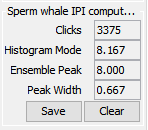
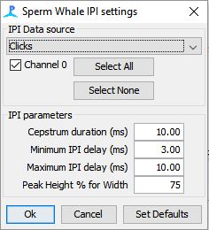
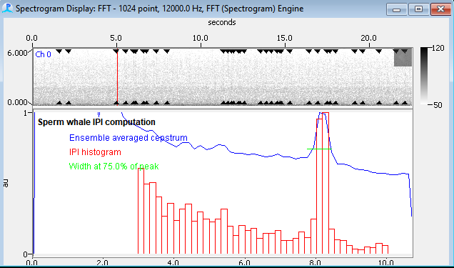
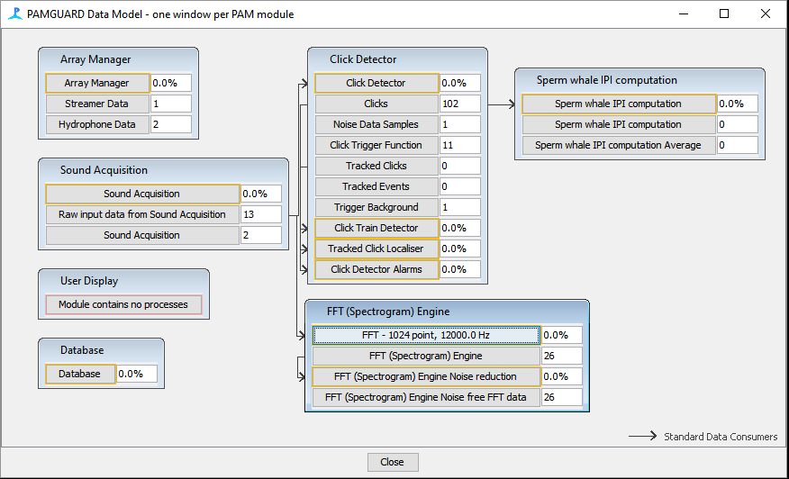

The "Sperm whale IPI Plugin" (AKA IPI plugin) is an external plugin for measuring the Inter-Pulse Interval (IPI) of the clicks of sperm whales. Measurement of IPI has been demonstrated to be a reliable means of estimating the total length of an individual sperm whale (Gordon 1991; Growcott et al 2011). The module employs two related signal processing methods, both based on cepstral analysis of clicks, to estimate IPI:
The IPI plugin was first published in 2009 (Pamguard version 1.6), and was updated in May 2018 to work as an external plugin with modern versions of PAMGuard (>=2.0.12c), and has been used in several peer reviewed publications (Growcott et al 2011, Miller et al 2013). The IPI plugin can be run in either Normal and Mixed Mode.
If you use this module to analyse data and wish to cite the IPI plugin please use the following reference:
Miller, B. S., Growcott, A., Slooten, E., and Dawson, S. M. (2013). Acoustically derived growth rates of sperm whales (Physeter macrocephalus) in Kaikoura, New Zealand. J. Acoust. Soc. Am., 134, 2438–45. doi:10.1121/1.4816564.
This 2018 update is the first real update to the PAMGuard IPI plugin in nearly 10 years. The 2018 update includes newly written documentation, and it streamlines configuration of the plugin by combining the two required modules (formerly EchoDetector & IpiDemo) into a single plugin. This update also simplifies the settings, and adds proper support for saving data to the Pamguard database and binary files. The 2018 updated plugin has been tested on PAMGuard 2.0.12c.
The IPI module can be added from the PAMGuard menu via:
File -> Add Module -> Sound Measurement -> Sperm whale IPI computation
After adding and configuring the IPI module, a Pamguard side-panel titled Sperm whale IPI computation should appear. Upon running Pamguard the Clicks field of this panel should show a count of the number of clicks processed. The other boxes display the mode of the IPI Histogram (IPI estimate from Method 1 above), and the peak of the ensemble averaged cepstrum (IPI estimate from Method 2 above). Estimates of IPI are all in milliseconds.

The IPI module, like most PAMGuard modules, can be configured via:
Settings -> Sperm whale IPI computation parameters

The Sperm Whale IPI Module uses clicks from PAMGuard's Click Detector as input. If a Click Detector module is not already present, the IPI module will request that one is added. See the section below for guidance on how the Click Detector should be configured for the IPI Module.
The IPI module requires that at least one channel in it's Source Panel is selected to compute IPIs. Multiple channels may be selected, but only one IPI Histogram and one Ensemble Averaged Cepstrum are calculated by the IPI module. If multiple channels are selected, then clicks from every selected channel will be used to create these IPI Histogram and Ensemble Averaged Cepstrum.
User specified minimum duration of the cepstrum in milliseconds. NB: Within the IPI module this value will be converted from a time measurement into the next largest power of two number of samples. Thus, the cepstrum that is displayed will typically be a little longer than the value specified here.
Setting a minimum and maximum IPI delay will force the module to choose an IPI within this range when estimating IPI. These limits can be thought of as the starting and ending bins for the IPI Histogram, but they also apply to the 'peak' IPI measured from the Ensemble Averaged Cepstrum.
The width of the cepstral peak from the ensemble average can be used as a measure of certainty of an ensemble averaged IPI measurement (i.e. narrow peaks in the ensemble average may be considered to have higher certainty than wider peaks). The value of Peak height % determines where on the peak the width will be measured. The default value of 75% (of the maximum) seems to give plausible results (see Miller et al J. Acoust. Soc. Am., 134, 2438–45).
The default settings in PAMGuard's Click Detector are usually suitable for detecting clicks most impulsive sounds, including sperm whales as well as everything from high-frequency, narrowband Harbor Porpoises to right whale "Gunshots." However, the Click Detector's default duration of clicks is not typically suitable for the Sperm Whale IPI Plugin. This will need to be changed by selecting:
Settings-> Click Detector -> Detection Parameters -> Click Length
The IPI modules will work best if the sum of the pre and post samples, which we call nSamples, is at least the same number of samples as the maximum possible IPI. This can be calculated as:
nSamples = CepstrumDuration / 1000 * sampleRate
Where Cepstrum Duration is the value that was entered into the IPI Settings measured in milliseconds, and sampleRate is measured in Hz. After calculating nSamples, set the following parameters under the tab Click Length:
Max Click Length: at least nSamples
Post sample: set between 90-100% of nSamples
Pre sample: set to the remainder of samples (0-10% of nSamples)
As an example, if data were recorded at a sample rate of 12 kHz, and CepstrumDuration was 40 ms, then nSamples will be 480. We then set Post samples to 450 and Pre samples to the remaining 30 samples. This will ensure that every single click detection will have at least 480 samples (nSamples). Next we set Max Click Length to a value greater than or equal to 480. If the sample rate in our example had been 24 kHz or 48 kHz, then we would double or quadruple these values.
The IPI module will save IPI estimates from the ensemble averaged cepstrum and the IPI histogram to the PAMGuard database. The database table will have the same name as the IPI module.
A new database row will be added each time PAMGuard's data acquisition is stopped (e.g. the pause button is pressed; the end of a file or set of merged files is reached). A new database row will also be added when the "Save" button in the IPI Side Panel is pressed.
The IPI Histogram and Ensemble Averaged Cepstrum will be cleared each time PAMGuard's data acquisition is started (e.g. the start button is pressed; or a new, non-merged file is started). The IPI Histogram and Ensemble Average will also be cleared when the "Clear" button in the IPI Side Panel is pressed.
The cepstra of individual clicks can be saved as a PAMGuard Binary File if a Binary Store module is present.
IPI binary files have no special header or footer information. The IPI binary object format is as follows:
| Module Version | Item | Format | Notes |
|---|---|---|---|
| 1 | parentUID | int64 | UID of parent click detection |
| 1 | IPI | float | IPI (peak of cepstrum) in milliseconds |
| 1 | ipiAmplitude | float | amplitude of cepstrum at time of IPI |
| 1 | sampleRate | float | the sample rate of the IPI |
| 1 | maxVal | float | maximum value of the cepstrum |
| 1 | length | int32 | number of samples of the cepstrum |
| 1 | echoData | int16[] | Cepstrum of the click scaled by 32767/maxVal |
The IPI histogram and ensemble IPI can be viewed if you have a User Display with a Spectrogram.
In the Settings of the spectrogram display, go to the panel called Plug ins, and check the box that says Sperm whale IPI computation.
Now you will get a visual representation of the IPI plugin beneath the spectrogram.

NB: neither the spectrogram, nor FFT engine is actually required for any of the IPI computations, -- it is just a container for viewing the results. However, the combined Spectrogram & IPI display can beuseful for viewing sperm whale clicks when picking the appropriate click threshold.
Common pitfalls when using the IPI module include:
Settings -> Click Detector -> Detection Parameters -> Echoes
and then checking the boxes to Run Echo Detector online and Discard Echoes. You will also need to determine for yourself a sensible value for the Max interval of echoes.
Below is an example of a typical data model showing the IPI module and Click Detector. (NB: neither the spectrogram, nor FFT engine is actually required for any of the IPI computations, -- it is just a container for viewing the results).
